| Abel Prize | |
|---|---|
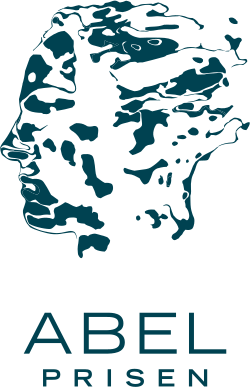 Abel Prize logo | |
| Awarded for | Outstanding scientific work in the field of mathematics |
| Country | Norway |
| Presented by | Government of Norway |
| First award | 2003 |
| Currently held by | Gerd Faltings (2026) |
| Website | www.abelprize.no |
{kind=link}
The Abel Prize (/ˈɑːbəl/ AH-bəl; Norwegian: Abelprisen [ˈɑ̀ːbl̩ˌpriːsn̩]) is awarded annually by the King of Norway to one or more outstanding mathematicians.[1] It is named after the Norwegian mathematician Niels Henrik Abel (1802–1829) and directly modeled after the Nobel Prizes;[2][3][4][5][6][7][8] as such, it is sometimes considered the Nobel Prize of mathematics.[9] It comes with a commemorative trophy and a monetary award of 7.5 million Norwegian kroner (NOK, about US$873,000 in 2026; increased from 6 million NOK in 2019).[10]
The Abel Prize's history dates back to 1899, when its establishment was proposed by the Norwegian mathematician Sophus Lie when he learned that Alfred Nobel's plans for annual prizes would not include a prize in mathematics. In 1902, King Oscar II of Sweden and Norway indicated his willingness to finance the creation of a mathematics prize to complement the Nobel Prizes, but the establishment of the prize was prevented by the dissolution of the union between Norway and Sweden in 1905. It took almost a century before the prize was finally established by the Government of Norway in 2001, and it was specifically intended "to give the mathematicians their own equivalent of a Nobel Prize."[7] The laureates are selected by the Abel Committee, the members of whom are appointed by the Norwegian Academy of Science and Letters.
The award ceremony takes place in the aula of the University of Oslo, where the Nobel Peace Prize was awarded between 1947 and 1989.[11] The Abel Prize board has also established an Abel symposium, administered by the Norwegian Mathematical Society, which takes place twice a year.[12]
History
The prize was first proposed in 1899, to be part of the celebration of the 100th anniversary of Niels Henrik Abel's birth in 1802.[13] The Norwegian mathematician Sophus Lie proposed establishing an Abel Prize when he learned that Alfred Nobel's plans for annual prizes would not include a prize in mathematics. King Oscar II was willing to finance a mathematics prize in 1902, and the mathematicians Ludwig Sylow and Carl Størmer drew up statutes and rules for the proposed prize. However, Lie's influence decreased after his death, and the dissolution of the union between Sweden and Norway in 1905 ended the first attempt to create an Abel Prize.[13]
{kind=link}
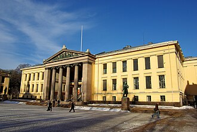
After interest in the concept of the prize had risen in 2001, a working group was formed to develop a proposal, which was presented to the Prime Minister of Norway in May. In August 2001, the Norwegian government announced that the prize would be awarded beginning in 2002, the two-hundredth anniversary of Abel's birth. Atle Selberg received an honorary Abel Prize in 2002, but the first actual Abel Prize was awarded in 2003.[13][14]
A book series presenting Abel Prize laureates and their research was commenced in 2010. The first three volumes cover the years 2003–2007, 2008–2012, and 2013–2017 respectively.[15][16][17]
In 2019, Karen Uhlenbeck became the first woman to win the Abel Prize, with the award committee citing "the fundamental impact of her work on analysis, geometry and mathematical physics.[18] The Bernt Michael Holmboe Memorial Prize was created in 2005. Named after Abel's teacher, it promotes excellence in teaching.[19]
Selection criteria and funding
Anyone may submit a nomination for the Abel Prize, although self-nominations are not permitted. The nominee must be alive. If the awardee dies after being declared the winner, the prize will be awarded posthumously.
The Norwegian Academy of Science and Letters declares the winner of the Abel Prize each March after recommendation by the Abel Committee, which consists of five leading mathematicians. Both Norwegians and non-Norwegians may serve on the Committee. They are elected by the Norwegian Academy of Science and Letters and nominated by the International Mathematical Union and the European Mathematical Society.[13][20]
Funding
The Norwegian Government gave the prize an initial funding of NOK 200 million (about €21.7 million[21]) in 2001. Previously, the funding came from the Abel foundation, but today the prize is financed directly through the national budget.
The funding is controlled by the Board, which consists of members elected by the Norwegian Academy of Science and Letters.[20] The current board consists of Ingrid Kristine Glad (chair), Aslak Bakke Buan, Helge K. Dahle, Kristin Vinje, Cordian Riener and Gunn Elisabeth Birkelund.[22]
Laureates
| Year | Laureate(s) | Image | Institution(s) | Citation |
|---|---|---|---|---|
| 2003 | Jean-Pierre Serre | 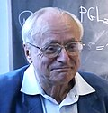 |
Collège de France | "For playing a key role in shaping the modern form of many parts of mathematics, including topology, algebraic geometry and number theory."[23] |
| 2004 | Michael Atiyah | 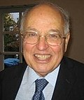 |
University of Edinburgh University of Cambridge |
"For their discovery and proof of the index theorem, bringing together topology, geometry and analysis, and their outstanding role in building new bridges between mathematics and theoretical physics."[24] |
| Isadore Singer | 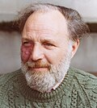 |
Massachusetts Institute of Technology University of California, Berkeley | ||
| 2005 | Peter Lax | 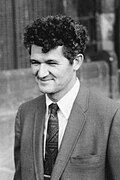 |
Courant Institute (NYU) | "For his groundbreaking contributions to the theory and application of partial differential equations and to the computation of their solutions."[25] |
| 2006 | Lennart Carleson | 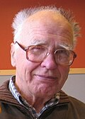 |
Royal Institute of Technology | "For his profound and seminal contributions to harmonic analysis and the theory of smooth dynamical systems."[26] |
| 2007 | S. R. Srinivasa Varadhan | 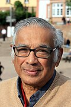 |
Courant Institute (NYU) | "For his fundamental contributions to probability theory and in particular for creating a unified theory of large deviation."[27] |
| 2008 | John G. Thompson | 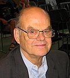 |
University of Florida | "For their profound achievements in algebra and in particular for shaping modern group theory."[28] |
| Jacques Tits | 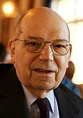 |
Collège de France | ||
| 2009 | Mikhail Gromov | 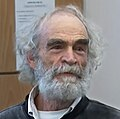 |
Institut des Hautes Études Scientifiques[29] Courant Institute (NYU)[30] |
"For his revolutionary contributions to geometry."[31] |
| 2010 | John Tate | 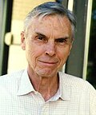 |
University of Texas at Austin | "For his vast and lasting impact on the theory of numbers."[32] |
| 2011 | John Milnor | 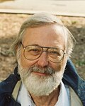 |
Stony Brook University | "For pioneering discoveries in topology, geometry, and algebra."[33] |
| 2012 | Endre Szemerédi | 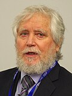 |
Alfréd Rényi Institute Rutgers University |
"For his fundamental contributions to discrete mathematics and theoretical computer science, and in recognition of the profound and lasting impact of these contributions on additive number theory and ergodic theory."[34] |
| 2013 | Pierre Deligne | _(cropped).jpg)
|
Institute for Advanced Study | "For seminal contributions to algebraic geometry and for their transformative impact on number theory, representation theory, and related fields."[35] |
| 2014 | Yakov Sinai | 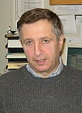 |
Princeton University Landau Institute for Theoretical Physics[36] |
"For his fundamental contributions to dynamical systems, ergodic theory, and mathematical physics."[37] |
| 2015 | John F. Nash Jr. | Princeton University | "For striking and seminal contributions to the theory of nonlinear partial differential equations and its applications to geometric analysis."[38] | |
| Louis Nirenberg | 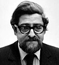 |
Courant Institute (NYU) | ||
| 2016 | Andrew Wiles | 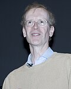 |
University of Oxford[39][40] | "For his stunning proof of Fermat's Last Theorem by way of the modularity conjecture for semistable elliptic curves, opening a new era in number theory."[41] |
| 2017 | Yves Meyer | 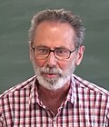 |
École normale supérieure Paris-Saclay | "For his pivotal role in the development of the mathematical theory of wavelets."[42] |
| 2018 | Robert Langlands | .jpg)
|
Institute for Advanced Study | "For his visionary program connecting representation theory to number theory."[43] |
| 2019 | Karen Uhlenbeck | 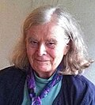 |
University of Texas at Austin | "For her pioneering achievements in geometric partial differential equations, gauge theory and integrable systems, and for the fundamental impact of her work on analysis, geometry and mathematical physics."[44] |
| 2020 | Hillel Furstenberg | 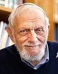 |
Hebrew University of Jerusalem | "For pioneering the use of methods from probability and dynamics in group theory, number theory and combinatorics."[45] |
| Grigory Margulis | 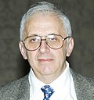 |
Yale University | ||
| 2021 | László Lovász | 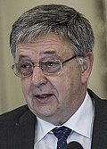 |
Eötvös Loránd University | "For their foundational contributions to theoretical computer science and discrete mathematics, and their leading role in shaping them into central fields of modern mathematics".[46] |
| Avi Wigderson | _Cropped.jpg)
|
Institute for Advanced Study | ||
| 2022 | Dennis Sullivan | 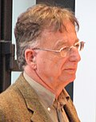 |
Stony Brook University CUNY Graduate Center |
"For his groundbreaking contributions to topology in its broadest sense, and in particular its algebraic, geometric and dynamical aspects."[47] |
| 2023 | Luis Caffarelli | 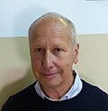 |
University of Texas at Austin | "For his seminal contributions to regularity theory for nonlinear partial differential equations including free-boundary problems and the Monge–Ampère equation."[48] |
| 2024 | Michel Talagrand | .jpg)
|
Centre national de la recherche scientifique | "For his groundbreaking contributions to probability theory and functional analysis, with outstanding applications in mathematical physics and statistics."[49] |
| 2025 | Masaki Kashiwara | 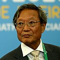 |
Research Institute for Mathematical Sciences | "For his fundamental contributions to algebraic analysis and representation theory, in particular the development of the theory of D-modules and the discovery of crystal graphs."[50] |
| 2026 | Gerd Faltings | 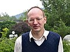 |
Max Planck Institute for Mathematics | "For introducing powerful tools in arithmetic geometry and resolving long-standing diophantine conjectures of Mordell and Lang."[51] |
{kind=link}
.jpg){kind=link}
_(cleaned)_(cropped).jpg){kind=link}
{kind=link}
{kind=link}
{kind=link}
.jpg){kind=link}
_(cropped).jpg){kind=link}
.jpg){kind=link}
.jpg){kind=link}
.jpg){kind=link}
{kind=link}
{kind=link}
.jpeg){kind=link}
{kind=link}
{kind=link}
.jpg){kind=link}
{kind=link}
_(cropped).jpg){kind=link}
_(cropped).jpg){kind=link}
.jpg){kind=link}
_(cropped).jpg){kind=link}
_(2)_(cropped).jpg){kind=link}
{kind=link}
Distribution by country and proportion of dual nationals
As for 2025, 11 out of 26 recipients were dual nationals.
{kind=link}
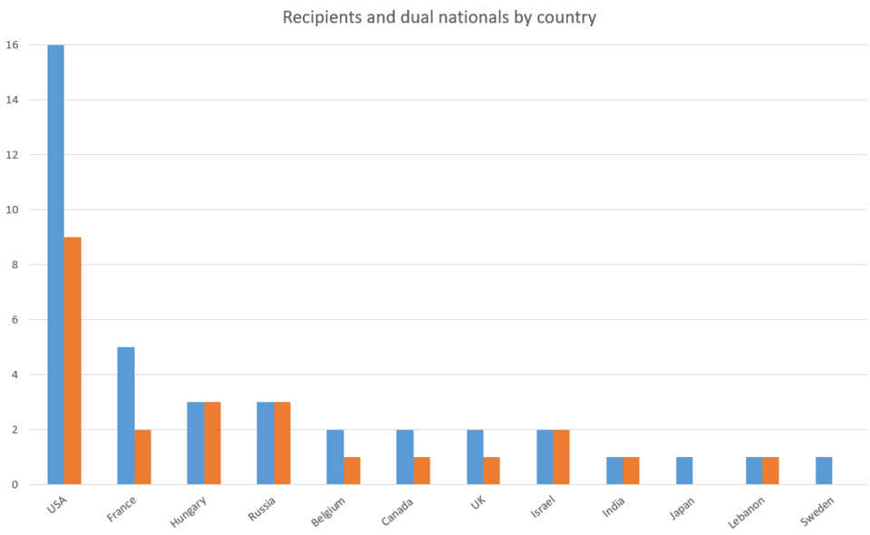
See also
- Fields Medal
- List of prizes known as the Nobel or the highest honors of a field
- List of mathematics awards
References
- ^ "Statutes for Niels Henrik Abel's Prize in Mathematics (The Abel Prize)". Retrieved 21 July 2022.
- ^ Chang, Kenneth (20 March 2018). "Robert P. Langlands Is Awarded the Abel Prize, a Top Math Honor". The New York Times. Archived from the original on 3 April 2019. Retrieved 23 March 2018.
- ^ Dreifus, Claudia (29 March 2005). "From Budapest to Los Alamos, a Life in Mathematics". The New York Times. Archived from the original on 29 May 2015. Retrieved 18 February 2017.
- ^ Cipra, Barry A. (26 March 2009). "Russian Mathematician Wins Abel Prize". ScienceNOW. Archived from the original on 29 March 2009. Retrieved 29 March 2009.
- ^ Laursen, Lucas (26 March 2009). "Geometer wins maths 'Nobel'". Nature. doi:10.1038/news.2009.196. Archived from the original on 22 March 2019. Retrieved 17 October 2012.
- ^ Foderaro, Lisa W. (31 May 2009). "In N.Y.U.'s Tally of Abel Prizes for Mathematics, Gromov Makes Three". The New York Times. Archived from the original on 2 April 2019. Retrieved 17 October 2012.
- ^ a b Devlin, Keith (April 2004). "Abel Prize Awarded: The Mathematicians' Nobel". Mathematical Association of America. Archived from the original on 27 August 2012. Retrieved 4 November 2012.
- ^ Piergiorgio Odifreddi; Arturo Sangalli (2006). The Mathematical Century: The 30 Greatest Problems of the Last 100 Years. Princeton University Press. p. 6. ISBN 0-691-12805-7. Archived from the original on 29 December 2016. Retrieved 23 March 2016.
- ^ "Abel Prize Awarded to Japanese Mathematician Who Abstracted Abstractions". The New York Times. 26 March 2025. Archived from the original on 16 September 2025. Retrieved 5 December 2025.
- ^ "Frequently asked questions: How much is the Abel Prize and what does it consist of?". abelprize.no. Retrieved 2 June 2026.
The Abel Prize consists of glass plaque designed by Norwegian artist Henrik Haugan, as well as prize money denominating 7,5 million NOK.
- ^ "University of Oslo". Oslo Opera House. Archived from the original on 3 August 2018. Retrieved 22 December 2012.
- ^ "Main Page". The Norwegian Academy of Science and Letters. Archived from the original on 18 June 2019. Retrieved 26 July 2012.
- ^ a b c d "The History of the Abel Prize". www.abelprize.no. Retrieved 21 July 2022.
- ^ O'Connor, John J.; Robertson, Edmund F., "Atle Selberg", MacTutor History of Mathematics Archive, University of St Andrews
- ^ H. Holden; R. Piene, eds. (2010). The Abel Prize 2003–2007. Heidelberg: Springer. doi:10.1007/978-3-642-01373-7. ISBN 978-3-642-01372-0. Archived from the original on 1 November 2009. Retrieved 28 August 2017.
- ^ H. Holden; R. Piene, eds. (2014). The Abel Prize 2008–2012. Heidelberg: Springer. doi:10.1007/978-3-642-39449-2. ISBN 978-3-642-39449-2. Archived from the original on 21 February 2015. Retrieved 28 August 2017.
- ^ H. Holden; R. Piene, eds. (2019). The Abel Prize 2013–2017. Heidelberg: Springer. doi:10.1007/978-3-319-99028-6. ISBN 978-3-319-99027-9. S2CID 239378974. Archived from the original on 6 August 2019. Retrieved 6 August 2019.
- ^ Change, Kenneth (19 March 2019). "Karen Uhlenbeck Is First Woman to Receive Abel Prize in Mathematics". The New York Times. Archived from the original on 4 May 2019. Retrieved 19 March 2019.
- ^ "Abel Prize | mathematics award". Encyclopedia Britannica. Archived from the original on 26 January 2020. Retrieved 19 May 2020.
- ^ a b "Nomination Guidelines". The Norwegian Academy of Science and Letters. Archived from the original on 2 August 2018. Retrieved 26 July 2012.
- ^ "Google Currency Converter". Archived from the original on 28 March 2017. Retrieved 27 March 2017.
- ^ "The Abel Board". www.abelprize.no. Retrieved 30 December 2022.
- ^ "2003: Jean-Pierre Serre". The Norwegian Academy of Science and Letters. Retrieved 21 July 2022.
- ^ "2004: Sir Michael Francis Atiyah and Isadore M. Singer". The Norwegian Academy of Science and Letters. Retrieved 21 July 2022.
- ^ "2005: Peter D. Lax". The Norwegian Academy of Science and Letters. Retrieved 21 July 2022.
- ^ "2006: Lennart Carleson". The Norwegian Academy of Science and Letters. Retrieved 21 July 2022.
- ^ "2007: Srinivasa S. R. Varadhan". The Norwegian Academy of Science and Letters. Retrieved 21 July 2022.
- ^ "2008: John Griggs Thompson and Jacques Tits". The Norwegian Academy of Science and Letters. Retrieved 21 July 2022.
- ^ "The Abel Committee's Citation 2009". The Norwegian Academy of Science and Letters. Archived from the original on 22 August 2016. Retrieved 9 August 2016.
- ^ Foderaro, Lisa W. (31 May 2009). "In N.Y.U.'s Tally of Abel Prizes for Mathematics, Gromov Makes Three". The New York Times. Archived from the original on 2 April 2019. Retrieved 17 October 2012.
- ^ "2009: Mikhail Leonidovich Gromov". The Norwegian Academy of Science and Letters. Retrieved 21 July 2022.
- ^ "2010: John Torrence Tate". The Norwegian Academy of Science and Letters. Retrieved 21 July 2022.
- ^ "2011: John Milnor". The Norwegian Academy of Science and Letters. Retrieved 21 July 2022.
- ^ "2012: Endre Szemerédi". The Norwegian Academy of Science and Letters. Retrieved 21 July 2022.
- ^ "The Abel Prize Laureate 2013". The Norwegian Academy of Science and Letters. Retrieved 21 July 2022.
- ^ "The Abel Committee's Citation 2014". The Norwegian Academy of Science and Letters. Archived from the original on 22 August 2016. Retrieved 9 August 2016.
- ^ "2014: Yakov G. Sinai". The Norwegian Academy of Science and Letters. Retrieved 21 July 2022.
- ^ "2015: John F. Nash and Louis Nirenberg". The Norwegian Academy of Science and Letters. Retrieved 21 July 2022.
- ^ "The Abel Committee's Citation 2016". The Norwegian Academy of Science and Letters. Archived from the original on 2 August 2016. Retrieved 9 August 2016.
- ^ "Sir Andrew J. Wiles receives the Abel Prize" (Press release). The Norwegian Academy of Science and Letters. Archived from the original on 22 August 2016. Retrieved 9 August 2016.
- ^ "2016: Sir Andrew J. Wiles". The Norwegian Academy of Science and Letters. Retrieved 21 July 2022.
- ^ "2017: Yves Meyer". The Norwegian Academy of Science and Letters. Retrieved 21 July 2022.
- ^ "2018: Robert P. Langlands". The Norwegian Academy of Science and Letters. Retrieved 21 July 2022.
- ^ "2019: Karen Keskulla Uhlenbeck". The Norwegian Academy of Science and Letters. Retrieved 21 July 2022.
- ^ "2020: Hillel Furstenberg and Gregory Margulis". The Norwegian Academy of Science and Letters. Retrieved 21 July 2022.
- ^ "2021: László Lovász and Avi Wigderson". abelprize.no. Retrieved 21 July 2022.
- ^ "Prize winner 2022". The Norwegian Academy of Science and Letters. Retrieved 25 March 2022.
- ^ "Prize winner 2023". The Norwegian Academy of Science and Letters. Retrieved 22 March 2023.
- ^ "Prize winner 2024". The Norwegian Academy of Science and Letters. Retrieved 20 March 2024.
- ^ "Prize winner 2025". The Norwegian Academy of Science and Letters. Retrieved 25 March 2025.
- ^ "Prize winner 2026". The Norwegian Academy of Science and Letters. Retrieved 19 March 2026.
External links
- Official website

- Official website of the Abel Symposium
- Barile, Margherita & Weisstein, Eric W. "Abel Prize". MathWorld.
- What is the Abel Prize?—Millennium Mathematics Project & Isaac Newton Institute
- Sir Faltings Wins 2026 Abel Prize (Faltings' theorem)—American Mathematical Society